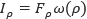
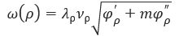
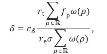

InaccessibilityMetric
Klassen InaccessibilityMetric beräknar ett
mätetal för otillgänglighet som används i granskningsprotokoll.
Modulen innehåller också två hjälpklasser,
Methodology och
Requirement, som inte exponeras externt.
- Källkod
js/common/InaccessibilityMetric.js- Enhetstester
_tests/common/InaccessibilityMetric.test.js
Konstruktor
Syntax
new InaccessibilityMetric()compliance()
Beräknar överensstämmelsenivån med DOS-lagens tillgänglighetskrav för
angivet mätetal. Mätetalet förutsätts vara beräknat med metoden
score() i denna klass och därmed ligga inom
intervallet [0, 500].
Syntax
compliance(score)Parametrar
score- Mätetal.
Returvärde
-
Om mätetalet < 10:
"full". -
Om 10 ≤ mätetalet < 80:
"partial". -
Om mätetalet ≥ 80:
"none".
Värdena matchar CSS-klasser som används i protokollvyn för att färgsätta element beroende på överensstämmelsenivån.
impact()
Beräknar ett kravs inverkan på det totala mätetalet för
otillgänglighet. Inverkan beräknas som
 
Om en användningssituation anges beräknas inverkan per krav för bara den angivna användningssituationen.
Syntax
impact(pages, data)
impact(pages, data, fps)Parametrar
page- Totalt antal granskade sidor.
data- Antal underkända sidor per WCAG-kriterium. Ett associativt objekt med kriterienummer (till exempel "1.2.3") som nycklar och antalet underkända sidor för kriteriet som värde.
fps- Användningssituation (functional performance statement). Se beskrivningen nedan.
Returvärde
Ett associativt objekt med inverkan per underkänt krav.
Exempel
const data = {"1.1.1": 7, "1.2.1": 0, …};
console.log(metric.impact(30, data));
// {1.1.1: 7.62, 1.3.1: 12.46, …}score()
Beräknar mätetalet för otillgänglighet för en datamängd. Det ideala värdet är 0 (noll). Maximalt värde – om alla WCAG-kriterier är underkända på samtliga granskade sidor – är 500. Se beskrivningen nedan för information om hur värdet beräknas.
Syntax
score(pages, data)
score(pages, data, fps)Parametrar
page- Totalt antal granskade sidor.
data- Antal underkända sidor per WCAG-kriterium. Ett associativt objekt med kriterienummer (till exempel "1.2.3") som nycklar och antalet underkända sidor för kriteriet som värde.
fps- Användningssituation (functional performance statement). Se beskrivningen nedan.
Returvärde
Den beräknade otillgängligheten som ett decimaltal i intervallet [0, 500].
Beskrivning
Mätetalet ska ge ett grovt numeriskt värde på otillgängligheten för ett stickprovsurval av webbsidor. Det väger in ett antal faktorer:
- hur många WCAG-kriterier som är underkända på varje sida
- om ett underkänt kriterium är på nivå A eller AA
- om ett underkänt kriterium är något av de fyra som klassas som ”hindrande” i WCAG (1.4.2, 2.1.2, 2.2.2, 2.3.1)
- hur många ”användningssituationer” (functional performance statements) i EN 301 549 ett underkänt kriterium är mappat mot
- om den mappningen är primär eller sekundär.
Mappningen av användningssituationer i EN 301 549 är lite märklig såtillvida att vissa kriterier är mappade till många situationer utan att nödvändigtvis orsaka stora problem för användare, medan andra kriterier som helt kan utestänga användare om de inte uppfylls är mappade mot bara någon enstaka situation. Ett linjärt beroende mot antalet mappade situationer riskerar alltså att snedvrida resultatet. Därför använder vi en kvadratrot i formeln för att dämpa inverkan något.
Formeln för att beräkna mätetalet innehåller ett antal konstanter. Några av dessa har värden som är satta mer eller mindre ”på känn”. Erfarenheten från praktisk användning tycks ändå visa att de valda värdena fungerar bra.

| Namn | Beskrivning | Värde | Not |
|---|---|---|---|
| δ | Mätetal för otillgänglighet. | ||
| cδ | Maximalt mätetal; godtycklig skalfaktor. | 500 | 1 |
| rt | Totalt antal krav i granskningsmetodiken. | 50 | 2 |
| re | Antal granskade krav (0 < re ≤ rt). | 50 | |
| σ | Antal granskade sidor. | ||
| ρ | Representerar ett krav (kriterium). | ||
| ℝ | Mängden krav i granskningsmetodiken. | ℝA ∪ ℝAA | |
| ω(ρ) | Viktningsfunktion. | ||
| fρ | Antal underkända sidor för krav ρ. | 0 ≤ fρ ≤ σ | |
| λρ | Viktning för AA-kriterier i WCAG. | 0,75 | 3 |
| νρ | Viktning för kriterier som inte är ”hindrande”. | 0,9 | 4 |
| φ′ρ | Antal primärt mappade FPS för krav ρ. | ||
| m | Viktning för sekundärt mappade FPS. | 0,5 | 5 |
| φ″ρ | Antal sekundärt mappade FPS för krav ρ. |
- Vi vill undvika en skala som kan tolkas som ”procent”, exempelvis 100 eller 1 000.
- Alla kriterier på nivåerna A och AA i WCAG 2.1.
- A-kriterier har vikten 1.
- ”Hindrande” kriterier har vikten 1.
- Primärt mappade FPS har vikten 1.
Användningssituationer
Mätetalet försöker att ta hänsyn till allvarlighetsgraden hos de underkända kriterierna, inte bara antalet. Därför finns mappningen mellan kriterier och användningssituationer, eller funktionsprestanda, (kallas ”functional performance statements” i EN 301 549) med i formeln.
InaccessibilityMetric kan räkna ut mätetalet
för otillgänglighet för en specifik användningssituation. Den kan även
beräkna inverkan per krav för en specifik användningssituation.
Parametern fps som används ska då ha någon av koderna i
nedanstående tabell.
| Kod | FPS | Förklaring |
|---|---|---|
WH |
without vision | utan synförmåga |
LH |
limited vision | nedsatt synförmåga |
WPC |
without perception of colour | utan förmåga att uppfatta färger |
WH |
without hearing | utan hörsel |
LH |
limited hearing | nedsatt hörsel |
WVC |
with no or limited vocal capability | nedsatt hörsel |
LMS |
limited manipulation or strength | nedsatt rörlighet eller muskelstyrka |
LR |
limited reach | begränsad räckvidd |
PST |
minimize photosensitive seizure triggers | känslighet för flimmer |
LC |
limited cognition | nedsatt kognitiv förmåga |